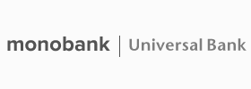

Вывод средств с международной платежной системы
На выгодных условиях, на примере вывода через monobank.
Реферальная ссылка на регистрацию в monobank ⇓
O Payoneer
Компания Payoneer основана в 2005 году, ее штаб-квартира находится в Нью-Йорке. Получившая развитие
благодаря венчурному капиталу, это прибыльная компания, которая входит в топ-100 наиболее быстро
развивающихся компаний в сфере финансовых услуг в рейтинге Inc. 5000.
Компания Payoneer предоставляет фрилансерам, фриланс-площадкам и компаниям, нанимающим фрилансеров, все
необходимое для отправки и приема платежей по всему миру, с той же легкостью, что и внутри страны.
Используя быстрые, удобные и недорогие способы оплаты труда фрилансеров, находящихся в разных странах
мира, фриланс-биржи, такие как Upwork, PeoplePerHour и Freelancer.com, а также и компании из США и
Европы могут отправлять платежи легко и быстро. Фрилансеры из более чем 200 стран мира обычно
сталкиваются с трудностями при получении платежей из-за рубежа. Благодаря Payoneer проблем с получением
оплаты больше нет, и это позволяет сосредоточиться на более важных вопросах.
Компания Payoneer предоставляет интернет-магазинам и онлайн-коммерсантам все необходимое для отправки и
приема платежей по всему миру с той же легкостью, что и внутри страны. Услуги Payoneer позволяют
международным торговым площадкам, таким как Wish, NewEgg и Lazada, использовать единый удобный интерфейс
для осуществления и отслеживания платежей, согласования взаиморасчетов вне зависимости от расположения,
способа оплаты или валюты продавцов. Интернет-магазины, как компании, так и частные лица, не имеющие
счетов в банках США или Европы, обычно сталкиваются с трудностями при получении платежей от клиентов.
Теперь у вас есть все необходимое для получения оплаты, что позволит вам сосредоточиться на выпуске
новых товаров и увеличении продаж.
Почему monobank?
- Скорость и удобство использования. Любую операцию можно
осуществить с мобильного телефона за несколько секунд
- Бесплатное оформление и обслуживание
- Удобный, интуитивно понятный интерфейс мобильного приложения
- Кредитный лимит до 100 000грн
- Пополнение карты бесплатно (банк, с которого будет отправлен
платеж, может взымать % с отправителя)
- Качественная аналитика ваших трат
- Кешбэк до 20% на покупки – 2 категории в месяц от банка
(продукты, АЗС, медицинские услуги, одежда, спорт и развлечения и другие) и категории от партнеров.
- Депозиты до 18,5% годовых в гривне и 3,75% в валюте
- Получение процента на остаток личных средств – 10%
- Оформление элитных карт – платиновая и железная с особыми
условиями
- Оформление в один клик виртуальных карт в валюте – долларах,
евро, злотых. Есть возможность получения пластиковой карты.
- Онлайн покупка валюты по выгодным курсам
- Оплата коммуналки, пополнение мобильного, бюджетные платежи
без комиссии.
- Бесконтактные платежи
- Продвинутые настройки безопасности
- Пополнение карт через платежные системы SWIFT, SEPA, Payoneer
Возможно связать 2 платежные системы Payoneer и monobank. Для этого необходимо:
- В системе Payoneer при регистрации указать счет валютной карты monobank
- В monobank провести авторизацию личного кабинета системы Payoneer

monobank – мобильный банк, пакет услуг от Universal Bank.
Как получить и активировать карту monobank?
- Установите приложение monobank из Google Play или App Store
monobank дарит 50грн кешбэка при скачивании приложения по реферальной ссылке
monobank
- Сфотографируйте паспорт и ИНН
- Выберите доставку карты сотрудником банка или заберите ее в ближайшей точке выдачи, бесплатно. При получении карты, необходимо будет подписать Договор о предоставлении банковских услуг, сделать селфи с паспортом.
- Сфотографировать через приложение карту, установить пин-код.